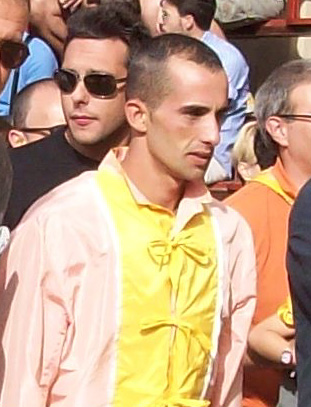

Notizie a cura di Fabrizio Gabrielli

Siena TV Live Streaming
LA TORRE VINCE IL MASGALANO 2014

LEGGI LA PRESENTAZIONE DI ANNA CARLI
Il Masgalano 2014, realizzato da Laura Brocchi, è stato vinto dalla Contrada della Torre.
La Commissione per l’assegnazione del Masgalano, presieduta da Gabriele Bartalucci, ha conferito l'ambìto riconoscimento alla Contrada della Torre, dopo le due Carriere che hanno visto la sua comparsa distinguersi per eleganza, dignità di portamento e coordinamento durante la sfilata del Corteo Storico che precede il Palio.
Il prezioso e bellissimo Masgalano, realizzato dall’artista senese Laura Brocchi, è stato offerto dal Coordinamento delle donne di Contrada. Questi i nomi dei rappresentanti delle Contrade nella Commissione del Masgalano: Gabriele Fattorini (Aquila), Stefano Pieri (Bruco), Simone Petricci (Chiocciola), Andrea Bonacci (Civetta), Federico Melai (Drago), Marco Corsini (Giraffa), Armando Angiolini (Istrice), Paolo Bartolini (Leocorno), Guido Bruni (Lupa), Giacomo Oretti (Nicchio) Michele Landi (Oca), Andrea Cancelli (Onda), Andrea Gonnelli (Pantera), Gabriele Bartali (Selva), Cesare Guideri (Tartuca), Mauro Bonelli (Torre), Aldo Giannetti (Valdimontone).
I misuratori di bandiere e tamburi, per la Carriera dello scorso luglio: Luca Zanelli (Selva) e Giovanni Sportoletti (Drago); per quella di agosto sono stati Antonio Dami (Civetta) e Lorenzo Lorenzini (Tartuca).
Di seguito i punteggi riportati da ciascuna Contrada.
| classifica finale |
Nome della Contrada |
punteggio luglio |
punteggio agosto |
punteggio totale |
| | | | |
| | | | |
| 1 | TORRE | 340 | 345 | 685 |
| 2 | ONDA | 336,5 | 341 | 677,5 |
| 3 | NICCHIO | 337 | 332 | 669 |
| 4 | CHIOCCIOLA | 330 | 331,5 | 661,5 |
| 5 | BRUCO | 339 | 319,5 | 658,5 |
| 6 | LEOCORNO | 319 | 336,5 | 655,5 |
| 7 | DRAGO | 319 | 336 | 655 |
| 8 | TARTUCA | 335 | 320 | 655 |
| 9 | LUPA | 336 | 316 | 652 |
| 10 | PANTERA | 329 | 322,5 | 651,5 |
| 11 | OCA | 315 | 335 | 650 |
| 12 | AQUILA | 320 | 328,5 | 648,5 |
| 13 | ISTRICE | 321 | 327 | 648 |
| 14 | SELVA | 316,5 | 318 | 634,5 |
| 15 | GIRAFFA | 329,5 | 279,5 | 609 |
| 16 | CIVETTA | 302 | 299 | 601 |
| 17 | VALDIMONTONE | 310 | 271,5 | 581,5 |
È ONLINE IL VIDEO DELLA CARRIERA!!!
Per ulteriori filmati, visitate il nostro canale su YouTube.
L'INTERVISTA AL NOSTRO STAFF ANDATA IN ONDA A RADIO CAPODISTRIA IL 14 AGOSTO SCORSO
LE PAGELLE DEI FANTINI
da www.sienafree.it
Civetta Andrea Mari detto Brio: 9
Non prende benissimo la mossa e Brigante riesce ad alzarlo costringendolo ad un cambio di traiettoria. Alla fonte, però, prima chiude il Leocorno e poi imposta una traiettoria “alla Mari” che fa fuori la Chiocciola e gli permette di girare secondo dietro all’Aquila. Il cavallo risponde alla grande e al secondo Casato entra di dentro all’Aquila sorpassandola poco dopo il bandierino. Va molto largo al terzo San Martino ma riesce comunque a mantenere la testa ed a conquistare un palio bellissimo, il suo quarto sigillo personale. RITROVATO
Aquila Francesco Caria detto Tremendo: 8
Alla mossa è un vero e proprio fulmine e nonostante la vicinanza della Pantera riesce a mettere la testa avanti, dovendo arrendersi solamente al Montone che sfrutta una traiettoria più interna. Complice la caduta di Brigante, guadagna la testa al primo San Martino, ma al Casato svernicia i palchi permettendo alla Civetta di riavvicinarsi. Chiude benissimo Brio davanti alla fonte e resta in testa fino al secondo Casato. Qui è bravissimo il fantino della Civetta a entrare all’interno sfruttando la potenza di Occolè. Forse poteva osare qualcosa in più provando a chiuderlo, ma alla fine fa un gran palio da outsider andando vicino al successo. SORPRENDENTE
Chiocciola Jonatan Bartoletti detto Scompiglio: 7,5
La fortuna non lo assiste neanche stavolta assegnadogli nuovamente la posizione più alta tra i canapi. Quando Tittia entra lui è bravissimo a prendere il tempo della mossa e dall’esterno si porta in terza posizione mettendosi alla ruota dell’Aquila. Al primo San Martino si fa infilare dall’interno dal Mari che lo costringe a girare larghissimo. Nonostante ciò riesce a mantenere la terza posizione e conduce un palio all’arrembaggio cercando, ma non trovando, tutti i varchi possibili per avvicinarsi alla testa. LOTTATORE
Valdimontone Carlo Sanna detto Brigante: 7
Nonostante sia al debutto, gestisce alla perfezione le fasi della mossa. Tutti spingono verso lo steccato, ma lui riesce lo stesso a farsi spazio. Pronti via si porta in testa, alza la traiettoria della Civetta e alla fonte è nettamente davanti. In entrata a San Martino il cavallo cede sui posteriori e lui finisce sul tufo abbandonando i sogni di gloria. Col senno di poi avrebbe potuto condurre un po’ meglio il cavallo in entrata di curva, ma per un fantino al debutto la prima volta è senza dubbio più che positiva. FACCIA TOSTA
Selva Giovanni Atzeni detto Tittia: 6
Con Istriceddu formava l’accoppiata più attesa, ma la dea bendata decide di relegarlo di rincorsa, facendo diminuire di gran lunga le sue credenziali. Entra dopo pochissimi minuti, forse per sfruttare al massimo tutto il potenziale del cavallo. Trova un varco e ci si butta immediatamente arrivando fortissimo dalle retrovie e recuperando posizioni, ma impatta nel cavallo della Chiocciola dovendo cambiare nuovamente traiettoria. Gira quinto e rimane intruppato anche al Casato quando si trova il Leocorno in traiettoria. Il suo palio finisce qui e al secondo giro subisce anche il sorpasso dall’interno del Drago, comunque assolutamente ininfluente per il risultato finale. SFORTUNATO
Drago Alberto Ricceri detto Salasso: 5
Ci si aspettava sicuramente di più dal dominatore di luglio. Alla mossa, nonostante l’ottima posizione, non riesce a farsi valere, finendo addirittura ultimo in entrata al primo San Martino. Sfrutta le cadute per recuperare qualche posizione, ma ormai è troppo distanziato ed il bel sorpasso alla Selva al secondo Casato non può bastare per rendere sufficiente la sua prestazione. IMPALPABILE
Pantera Sebastiano Murtas detto Grandine: 4,5
Nonostante la vicinanza al canape, in partenza si fa sorprendere in modo incredibile dall’Aquila che scappa via senza alcun problema. Al primo San Martino viene alzato dalla Chiocciola, ma avrebbe il tempo per correggere la traiettoria, invece finisce ai materassi senza colpo ferire. Se la sua rivale non vince è solo per la grande carriera della Civetta, non certo per la sua prova, questa volta veramente opaca. DELUDENTE
Leocorno Giuseppe Zedde detto Gingillo: 4
A luglio ci aveva illuso, invece stavolta conferma un trend negativo in quanto a “purghe” che non accenna a terminare. Alla mossa non riesce a tenere Oppio a contatto con il canape e parte in seconda ruota. Alla fonte prova ad entrare all’interno della Civetta, ma si becca la parata di Brio che lo costringe a rimanere dietro. L’unica cosa buona del suo palio è l’ingresso al primo San Martino, dove guadagna diverse posizioni. La Civetta vola in testa e lui, da quarto, non fa niente per provare un estremo tentativo di rimonta. Rimane nella stessa posizione per tutti i 3 giri ed assiste, impotente, alla vittoria della rivale. STOPPATO
Bruco Alessio Migheli detto Girolamo: N.P. (non pervenuto)
Difficilissimo valutare il suo palio perché non si vede praticamente mai. Parte anche benino, ma a San Martino è già settimo e piuttosto distanziato dalla testa. Al primo Casato i 2 scossi lo spingono verso i palchi. Rischia di cadere, ma rimane a cavallo, anche se da questo momento si fa fatica anche a scorgerlo nelle inquadrature della corsa. Ci si aspettava una carriera all’attacco ed una sorta di rivincita dopo lo sfortunato palio di luglio, invece è arrivata una prova anonima e incolore, forse fin troppo. CHI L’HA VISTO?
ALLA CIVETTA IL PALIO DELL’ASSUNTA
Andrea Mari vince la sua quarta carriera con l’esordiente Occolé
E’ Civetta! La corsa è finita. Nell’aria i canti dei vincitori. Il popolo del Castellare esulta per la trentaquattresima volta. L’aria dentro Piazza del Campo è ancora carica di adrenalina, di grida di gioia e di pianti. E’ la vita con le sue tracce. Come i segni degli zoccoli lasciati sul tufo dai cavalli. Uomini e animali insieme hanno rincorso un sogno: il drappo di seta amato e desiderato come un’amante. A conquistarlo Andrea Mari, detto Brio, su Occolé, il castrone baio di 7 anni, per la prima volta sul tufo della piazza. Alla Civetta l’ambito premio: il bellissimo drappellone di Ivan Dimitrov, l’artista capace di trasformare i colori in poesia e le forme in sensazioni. Contenitore simbolico di sogni, di storia passata e presente, quella di una città capace di ritrovarsi e testimoniarsi attraverso i sentimenti e le passioni che la legano alle sue Contrade. A quello che rappresentano e sono capaci di generare.
Il Palio, con il suo popolo vittorioso, è già in Duomo. Magico trofeo inseguito con il pensiero e conquistato con il vigore in una corsa avvincente, dove la sorte, come sempre, ha dettato le sue regole. Sbaragliate le ipotesi e scavalcate le umane congetture perché, citando Mario Luzi, il grande poeta al quale, nel centenario della sua nascita, è stato dedicato il drappellone Il Palio è il Palio. Nessuna interpretazione sociologica, storica, antropologica, potrebbe spiegarlo. Rogo furente della senesità, in ogni caso impareggiabile conferma di essa.
Quando fra i canapi si sono allineate: Valdimontone, Civetta, Drago, Leocorno, Bruco, Aquila, Pantera, Chiocciola, con la Selva di rincorsa, è finito il tempo di mezzo, il catarsi dell’attesa. Siena, avvolta dalle sue bandiere, si è ritirata – rubando dalla produzione luziana - internata nell’idea di sé, bruciandosi nella propria essenza. E noi con lei, perduti nel fascino del suo antico essere, veniamo catapultati nella corsa, preceduta da un silenzio irreale.
Parte in testa Valdimontone, dietro l’Aquila. A inseguirle la Civetta e il Bruco.
Alla prima curva di S. Martino cadono Valdimontone e Pantera. Il fato ha già scritto l’esito. La seconda curva, quella del Casato, vede prima l’Aquila, dietro Civetta e Chiocciola. Sarà il secondo giro dell’anello di tufo a decidere, quando, all’altezza della mossa, la Civetta sorpassa dall’interno l’Aquila.
Inutile lo sforzo delle inseguitrici.
Il Palio dedicato alla Madonna assunta in cielo è terminato. La Civetta taglia il bandierino per prima. Il furore policromo del bruciante mulinello, come scrisse il poeta che tanto amò Siena, si è dissolto migrando nel ricordo dei senesi.
La piazza si è svuotata, come il sogno di vittoria di chi ha perso.
La magica alchimia di emozioni, passione, amore, si rigenererà durante l’inverno (per i senesi inizia domani), così da esplodere, di nuovo e per sempre, la prossima estate.
UN PO' DI CURIOSITA'
IL DRAGO HA VINTO LA PROVACCIA
Il Drago ha vinto la Provaccia.
Questo l'ordine d'ingresso tra i canapi:
1. CIVETTA - Occolé - Brio
2. CHIOCCIOLA - Polonski - Scompiglio
3. PANTERA - Querino - Grandine
4. AQUILA - Lo Specialista - Tremendo
6. LEOCORNO - Oppio - Gingillo
7. DRAGO - Morosita Prima - Salasso
8. SELVA - Istriceddu - Tittia
9. BRUCO - Porto Alabe - Girolamo
R. VALDIMONTONE - Osvaldo - Brigante
CARLO SANNA SI CHIAMERA' BRIGANTE
L'esordiente Carlo Sanna si chiamerà Brigante. Il suo paese natale, Sindia (1767 abitanti) in provincia di Nuoro, ha deciso di seguire
e di sostenere, seppure a distanza, il fantino del Valdimontone
allestendo un maxischermo presso il Centro Servizi di San Demetrio.


BUONO A SAPERSI
E' possibile assistere gratuitamente al Palio (e alle prove effettuate nei tre giorni precedenti) dall' interno della Piazza del Campo, dove si deve entrare prima che siano chiusi gli accessi.
Più comodamente, ma a pagamento si può assistere seduti sui palchi che circondano la Piazza oppure affacciati alle finestre o ai balconi dei palazzi.
Non esistendo una biglietteria accentrata, è necessario rivolgersi direttamente ai gestori dei singoli palchi (palcaioli) o ai proprietari degli appartamenti che si affacciano sulla Piazza.
LA SELVA HA VINTO LA PROVA GENERALE
La Selva ha vinto la Prova Generale con Tittia tornato su Istriceddu.
Questo l'ordine d'ingresso tra i canapi:
1. VALDIMONTONE - Osvaldo - Carlo Sanna
2. BRUCO - Porto Alabe - Girolamo
3. SELVA - Istriceddu - Tittia
4. DRAGO - Morosita Prima - Salasso
5. LEOCORNO - Oppio - Gingillo
6. AQUILA - Lo Specialista - Tremendo
7. PANTERA - Querino - Grandine
8. CHIOCCIOLA - Polonski - Scompiglio
R. CIVETTA - Occolé - Brio
GLI OSPITI DEL COMUNE
- Jaromir Sokolowski, Sottosegretario di Stato alla Presidenza della Repubblica Polaccca
- Volodya Bojkov, Consigliere dell’Ambasciata bulgara
- Abigail M. Rupp, Console Americano a Firenze
- Marcello Giuntini, Sindaco di Massa Marittima
- Sheikh Ali Khaled Al Sabah, Ambasciatore del Kuwait
- Fabio Sbrana, Dir. of Minimally Invasive and Robotic Surgery Advocate Lutheran General Hospital
- Paolo Pizzari, Amministratore Delegato Acquedotto del Fiora
- Giorgio De Girolami, Presidente Confservizi Cispel Toscana
- Mario Caligiuri, Assessore Regione Calabria
- Andy Luotto, Attore

Ospiti Siena Capitale:
- Marie-Louise Roomark (Sindaco di Umea Capitale della Cultura 2014)
- Teresa Albouquerque (Sottosegretario di Stato – Portogallo)
- JanRickard Bjoringe (Direttore Generale Regione Gotland – Svezia)
- Han Bakker (Utrecht e Leeworden)
TRAVOLTO E UCCISO DA UN'AUTO
L'UOMO CHE PER ANNI HA PORTATO I BOVI AL PALIO
Sergio Presenti detto Sarchiello era nato a Sinalunga il 14 agosto 1939 e il giorno del suo compleanno, circa le 5 del mattino, mentre si dirigeva ad accudire i suoi animali, è stato investito da un'auto
che gli ha procurato la morte.
Per molti anni il suo nome è stato associato alle "Chianine" che hanno trainato il Carroccio e il
suo funerale si terrà proprio il giorno del Palio.
I bovi presenti a questo Palio saranno di Massimo Donnini di Pozzo della Chiana che ha iniziato sedici anni fa
ad accudire questi animali sulle orme della passione di Sarchiello.
 
(foto concessa dalla famiglia Presenti - cliccare sul giornale per leggere l'articolo)
IL LEOCORNO HA VINTO LA QUARTA PROVA
Il Leocorno ha vinto la quarta prova del Palio di agosto corsa con 9 contrade. Andrea Coghe nella Selva al posto di Tittia.
Questo l'ordine d'ingresso tra i canapi:
1. CIVETTA - Occolé - Brio
2. PANTERA - Querino - Grandine
3. LEOCORNO - Oppio - Gingillo
4. SELVA - Istriceddu - Andrea Coghe
5. VALDIMONTONE - Osvaldo - Carlo Sanna
6. DRAGO - Morosita Prima - Salasso
7. BRUCO - Porto Alabe - Girolamo
8. CHIOCCIOLA - Polonski - Scompiglio
R. AQUILA - Lo Specialista - Tremendo
SU I FANTINI CHE HANNO CORSO SOLO ALCUNE PROVE
LA GIRAFFA NON CORRERA' IL PALIO
Con l'infortunio della debuttante Quietness, la Giraffa non prenderà parte al Palio di Agosto.
Dal 1982 ad oggi è la quinta volta che la contrada di via delle Vergini non partecipa al Palio per infortuni occorsi ai propri cavalli.
L'ultimo avvenne nell'agosto 2010 quando ebbe in sorte il Cavallo Guschione che riportò lo stiramento dei muscoli dell'avambraccio destro.
Dopo l'infortunio del 2010 la Giraffa si rifece vincendo il primo Palio al quale prese parte, ossia il 16 agosto 2011.
QUIETNESS SOTTOPOSTA AD INTERVENTO CHIRURGICO

QUIETNESS
Quietness, la cavalla andata in sorte alla Contrada della Giraffa, infortunatasi durante la terza prova del Palio, prontamente sottoposta ad accertamenti radiologici alla clinica veterinaria “Il Ceppo”, ha riportato la frattura della prima falange dell’arto posteriore sinistro ed
è stata sottoposta a un intervento chirurgico per la riduzione della frattura.
IL LEOCORNO HA VINTO LA TERZA PROVA
INFORTUNIO A QUIETNESS
Il Leocorno ha vinto la terza prova del Palio di agosto. Nessun cambiamento nelle monte.
Il cavallo Quietness della Contrada della Giraffa ha riportato una lesione alla parte distale dell’arto posteriore sinistro. Prontamente stabilizzato, è stato tempestivamente trasportato alla clinica veterinaria “Il Ceppo” per accurati accertamenti.
Questo comunque l'ordine d'ingresso tra i canapi:
1. AQUILA - Lo Specialista - Tremendo
2. CHIOCCIOLA - Polonski - Scompiglio
3. BRUCO - Porto Alabe - Girolamo
4. GIRAFFA - Quietness - Bellocchio
5. DRAGO - Morosita Prima - Salasso
6. VALDIMONTONE - Osvaldo - Carlo Sanna
7. SELVA - Istriceddu - Tittia
8. LEOCORNO - Oppio - Gingillo
9. PANTERA - Querino - Grandine
R. CIVETTA - Occolé - Brio
DOMANI IL DRAPPELLO DEI CARABINIERI SALUTERA’ I PICCOLI CONTRADAIOLI
Domani, 15 agosto, nell’ambito dei festeggiamenti per il bicentenario della fondazione dell’Arma dei Carabinieri, il Drappello dei Carabinieri appena dopo il consueto ingresso in Piazza del Campo, prima della Prova Generale del Palio, presenterà gli onori ai bambini delle Contrade che assistono alla corsa dal palco davanti al Palazzo Pubblico.
Un gesto, proposto dal Comitato Amici del Palio e, subito accolto dal Magistrato delle Contrade e dalla stessa amministrazione comunale, il cui grande significato vuole, ancor più, rinsaldare il legame antico tra l’Arma e il Palio.
LA CIVETTA HA VINTO LA SECONDA PROVA
La Civetta ha vinto anche la seconda prova del Palio di agosto corsa alle 10.00 a causa dell'acquazzone notturno che ha investito Siena. Questo l'ordine d'ingresso tra i canapi:
1. CHIOCCIOLA - Polonski - Scompiglio
2. SELVA - Istriceddu - Tittia
3. BRUCO - Porto Alabe - Girolamo
4. AQUILA - Lo Specialista - Tremendo
5. LEOCORNO - Oppio - Gingillo
6. VALDIMONTONE - Osvaldo - Carlo Sanna
7. CIVETTA - Occolé - Brio
8. PANTERA - Querino - Grandine
9. GIRAFFA - Quietness - Bellocchio
R. DRAGO - Morosita Prima - Salasso
LA CIVETTA HA VINTO LA PRIMA PROVA
La Civetta ha vinto la prima prova del Palio di agosto. Questo l'ordine d'ingresso tra i canapi:
1. DRAGO - Morosita Prima - Salasso
2. GIRAFFA - Quietness - Bellocchio
3. PANTERA - Querino - Grandine
4. CIVETTA - Occolé - Brio
5. VALDIMONTONE - Osvaldo - Carlo Sanna
6. LEOCORNO - Oppio - Gingillo
7. AQUILA - Lo Specialista - Tremendo
8. BRUCO - Porto Alabe - Girolamo
9. SELVA - Istriceddu - Tittia
R. CHIOCCIOLA - Polonski - Scompiglio

I 34 CAVALLI ALLA TRATTA
(accanto al nome del cavallo quello del proprietario)
1. ISTRICEDDU - Serena Butteri
2. LO SPECIALISTA - Fabio Fioravanti
3. MOCAMBO - Mark Harris Getty
4. MORESU - Fabio Fioravanti
5. MOROSITA PRIMA - Carolina Tacconi
6. NAIKE' - Simone Picchi
7. NICOLAS DE P.ULPU - Mark Harris Getty
8. OCCOLE' - Alberto Manenti
9. ONEGLIA DE OZIERI - Luca Francesconi
10. OPPIO - Giuliano Brandini
11. ORA DI GALLURA - Angela Rossi
12. ORIOX - Giulia Zingarelli
13. OSAMA BIN - Mark Harris Getty
14. OSVALDO - Roberto Danesi
15. PECCATRICE - Simone Berni
16. PESTIFERO - Massimo Leonini
17. PHATOS DE OZIERI - Giorgio Campanini
18. PITZULU - Mario Savelli
19. POLONSKI - Mark Harris Getty
20. PORTO ALABE - Fabrizio Brogi
21. PRESSING DE MORES - Caterina Volpi
22. PRETZIOSA - Stefano Paccagnini
23. QUANNA - Francesco Giunti
24. QUARZO BLU - Mark Harris Getty
25. QUARZUS - Francesco Manca
26. QUASAS - Fabio Romanelli
27. QUASIMODA - Camilla Marzi
28. QUASIMODO DI GALLURA - Luigi Bruschelli
29. QUEBECK SAURO - Duccio Ravenni
30. QUERIDA DE MARCHESANA - Giovanni Atzeni
31. QUERINO - Stefano Bramerini
32. QUIETNESS - Augusto Posta
33. QUINTILLIANO DE AIGHENTA - Emiliano Rinaldi
34. QULPA DI GALLURA - Gianni Oddo
PRESENTATO IL DRAPPELLONE DEL 16 AGOSTO DIPINTO DA IVAN DIMITROV


Nel cortile del Podestà di Palazzo Pubblico è stato presentato il drappellone del Palio della Madonna Assunta, dipinto dal pittore bulgaro Ivan Dimitrov e dedicato al centenario della nascita del poeta toscano Mario Luzi.
Mario Luzi visse a Siena con i genitori in Piazza Provenzano Salvani dal 1927 al 1929 dove concluse gli studi ginnasiali. Il sindaco Valentini ha spiegato la scelta di commissionare l'opera a Ivan Dimitrov, che ha vissuto a lungo a Bologna: l'Italia e la Bulgaria esprimeranno infatti nel 2019 le due capitali europee della Cultura e questo legame tra Italia e Bulgaria deve essere anche uno stimolo per conoscere meglio questo paese.
Potete leggere una descrizione più particolareggiata del drappellone, cliccando qua sotto.
CLICCATE QUA SOTTO
sul drappellone e per vederlo ad alta risoluzione.
SONO 58 I CAVALLI AMMESSI ALLE PROVE MATTUTINE DEL 12 AGOSTO E 10 QUELLI CHE VANNO DIRETTAMENTE ALLA TRATTA DEL 13
 
Di seguito ecco l’elenco dei cavalli ammessi alle prove mattutine di addestramento che si svolgeranno martedì prossimo 12 agosto, alle ore 6, e di quelli che sono stati ammessi direttamente alla Tratta che si terrà la mattina successiva (nell'ordine: numero, nome cavallo, proprietario).
N.B.: passando col mouse sopra al nome dei cavalli, potrete accedere alle relative schede statistiche dei soggetti che hanno già corso almeno una Carriera.
CAVALLI AMMESSI ALLE PROVE MATTUTINE DI ADDESTRAMENTO DEL 12 AGOSTO
1 MAC GYVER Tamara Rosi
2 MALI BOOM BOOM Egisto Giuseppe Galeazzi
3 MISSISSIPPI Osvaldo Costa
4 MORESU Fabio Fioravanti
5 MOROSITA PRIMA Carolina Tacconi
6 O’ SOLE MIO BELLO Egisto Giuseppe Galeazzi
7 OCCOLE’ Alberto Manenti
8 ONEGLIA DE OZIERI Luca Francesconi
9 ORA DI GALLURA Angela Rossi
10 ORGOLESE Simone Berni
11 ORIOX Giulia Zingarelli
12 OSAMA BIN Mark Harris Getty
13 PECCATRICE Simone Berni
14 PERICLEA Jacopo Ferri
15 PESTIFERO Massimo Leonini
16 PHATOS DE OZIERI Giorgio Campanini
17 PICCOLO SOGNO Tommaso Furielli
18 PITZULU Mario Savelli
19 PRESSING DE MORES Caterina Volpi
20 PRETZIOSA Stefano Paccagnini
21 PREZIOSA PENELOPE Antonio Pozzi
22 QUADRIVIA Remo Carli
23 QUANNA Francesco Giunti
24 QUARTER Serena Butteri
25 QUARZO BLU Mark Harris Getty
26 QUARZUS Francesco Manca
27 QUASAS Fabio Romanelli
28 QUASIMODA Camilla Marzi
29 QUASIMODO DI GALLURA Luigi Bruschelli
30 QUATIVOGLIO Antonio Zedde
31 QUEBECK SAURO Duccio Ravenni
32 QUEEN WINNER Carlo Fusi
33 QUERIDA DE MARCHESANA Giovanni Atzeni
34 QUESTURINO Salvatore Muroni
35 QUI’ LOGAN Mattia Marchetti
36 QUIETNESS Augusto Posta
37 QUINOA PRIMA Stefano Serreli
38 QUINTILIANO Niccolò Rugani
39 QUINTILLIANO DE AIGHENTA Emiliano Rinaldi
40 QULPA DI GALLURA Gianni Oddo
41 QUORE DE SEDINI Salvatore Panebianco
42 RADESKI Maria Elena Frosinini
43 RAKTOU Giovanni Carta
44 RAMONA DANZIG Mark Harris Getty
45 RENALZOS Marcello Roti
46 REXY Nicola Sandroni
47 ROBA E MACOS Osvaldo Costa
48 ROCCO NICE Mattia Marchetti
49 ROCCO RO Giambattista Satta
50 RODRIGO BAIO Massimo Maria Alessi
51 ROMANTICO BAIO Osvaldo Costa
52 ROMANZO PER ANNA Umberto Bartalucci
53 RONDELLO Nicola Perinti
54 RONZIO Sandro Bencardino
55 ROSA BELLA Michela Gori
56 ROTEGAGIU Roberto Meniconi
57 ROVAIO SAURO Massimo Martelli
58 RUBIEN Michele Catalani
CAVALLI AMMESSI DIRETTAMENTE ALLA TRATTA DEL 13 AGOSTO
1 ISTRICEDDU Serena Butteri
2 LO SPECIALISTA Fabio Fioravanti
3 MOCAMBO Mark Harris Getty
4 NAIKÈ Simone Picchi
5 NICOLAS DE PEDRA ULPU Mark Harris Getty
6 OPPIO Giuliano Brandini
7 OSVALDO Roberto Danesi
8 POLONSKI Mark Harris Getty
9 PORTO ALABE Fabrizio Brogi
10 QUERINO Stefano Bramerini
GIA’ PRONTA LA PIAZZA PER IL PALIO DEL 16 AGOSTO
 
Sabato alle ore 12 è stata completata la stesura del tufo per la predisposizione della pista per il Palio dedicato alla Madonna Assunta.
Come sempre, e con estrema abilità, gli operai comunali, in azione fin dalle 3 di notte hanno eseguito tutte le operazioni necessarie per rendere agibile l’anello di tufo per le prove mattutine in programma lunedì alle ore 6.
Sono circa 40 i dipendenti comunali che, insieme ai tecnici del servizio manutenzione, si trovano impegnati, in tempi strettissimi, all’allestimento completo della Piazza; basti pensare, infatti, che il grande palco delle Comparse (ospita oltre 550 figuranti), viene assemblato in sole tre ore.
Un impegno non indifferente, svolto, spesso, in orari non “canonici”, a dimostrazione, anche, del grande sentimento di appartenenza alla Festa senese e alla città. Per questo, il Sindaco Bruno Valentini, questa mattina si è intrattenuto con tutti gli operai a conclusione dei lavori. Un’occasione di contatto informale, che è stata, anche, momento di confronto e interscambio relazionale.
DOMENICA 10 AGOSTO ALLE ORE 19 LA PRESENTAZIONE DEL DRAPPELLONE
Domenica 10 agosto alle ore 19 si svolgerà nel Cortile del Podestà di Palazzo Pubblico la presentazione del drappellone, presentazione che sarà presieduta, come di consueto dal Sindaco di Siena, Bruno Valentini. Come già trapelato da altre fonti, il drappellone del Palio del 16 agosto è stato dipinto dal pittore bulgaro Ivan Dimitrov. L’artista bulgaro ha reso omaggio al grande poeta toscano Mario Luzi, cui è dedicata la parte allegorica del “cencio”, in occasione del centenario della sua nascita.
Sarà la storica dell’arte Margherita Anselmi Zondadari a illustrare l’opera.
Ricordiamo che domenica tutta la città di Siena si addobberà anche per la tradizionale manifestazione "Calici di stelle", che unisce una ricca offerta di iniziative musicali ed artistiche.
CHI CORRERA' IL PROSSIMO PALIO DEL 16 AGOSTO 2014
Ecco il quadro completo delle 10 Contrade che correranno la Carriera del 16 agosto 2014:
DRAGO, GIRAFFA, PANTERA, CIVETTA, VALDIMONTONE, LEOCORNO, AQUILA, BRUCO, SELVA E CHIOCCIOLA.
         
Questa combinazione di dieci contrade non si è mai verificata (a partire dal 1722) (cfr.).
L'Istrice che avrebbe dovuto correre di diritto, non potrà partecipare, perché squalificata. (cfr.)
ALTRI CAPITOLI INERENTI ALLE ESTRAZIONI:
Chi ha corso nel 2000
Le estrazioni nel 2000
I ritardi all'estrazione
Da chi venne estratta
NEL NOSTRO CANALE YOUTUBE, DUE NUOVI FILMATI AMATORIALI DELLA CARRIERA DI LUGLIO
È ONLINE IL VIDEO UFFICIALE DELLA CARRIERA DEL 2 LUGLIO!!!
RICCARDO FROSINI E' IL NUOVO MAESTRO DI CAMPO

cliccare sull'immagine per leggere l'articolo de La Nazione
NOMINATE LE FIGURE CHE SOVRINTENDONO PER LA CARRIERA DI AGOSTO
La Giunta comunale ha deliberato anche la nomina dei Deputati della Festa, Ispettori della pista, Giudici della vincita e Maestro di Campo.
In adesione alla designazione espressa dal Magistrato delle Contrade, i Deputati della Festa saranno: Stefano Petreni (Oca), Luciano Salvini (Onda), Mauro Civai (Istrice); gli Ispettori della pista Marco Butini (Tartuca), Gianni Bolognesi (Torre), Luca Pietrangeli (Lupa). Giudici della vincita Enrico Fatucchi (Torre), Mario Giustarini (Nicchio) e Stefano Mucci (Istrice); Maestro di Campo Franco Sodi.
I DEPUTATI DELLA FESTA
GLI ISPETTORI DI PISTA
I GIUDICI DELLA VINCITA
|